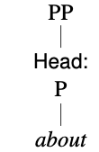

Some trees
Let's start with a very simple tree. We'll start with a single-branching AdjP composed only of a Head.
- As always, the top node is a phrasal category, in this case AdjP. There's no function because functions are relational, and this AdjP is not in a relation.
- The very bottom of our tree is a word node, in this case happy.
- Immediately above happy is a node with a function labeled "Head". This is the function of happy in the AdjP. It also has the category label Adj, which tells us that happy is an adjective.
[1]
Let's try another one. This time we have a single-branching AdvP.
- As always, the top node is a phrasal category, in this case AdvP. There's no function because functions are relational, and this AdvP is not in a relation.
- The very bottom of our tree is a word node, in this case very.
- Immediately above very is a node with a function labeled "Head". This is the function of very in the AdvP. It also has the category label Adv, which tells us that very is an adverb.
[2]
Let's put these together. This time we have a double-branching AdjP.
- As always, the top node is a phrasal category, in this case AdjP. There's no function because functions are relational, and this AdjP is not in a relation.
- If you start at the top and follow the right-hand branch, you see we have simply reproduced the AdjP from [1].
- On the left, though, we have the AdvP from [2], but this time it's in a relation in the AdjP, so it has a function. Its function in the AdjP is Modifier.
[3]
This is the basis of all trees. Below the picture, we'll repeat this with the PP about it. Before scrolling down, try drawing trees like [1–3] for about, it, and about it.
We'll try that again. We start with a single-branching PP.
- As always, the top node is a phrasal category, in this case PP. There's no function because functions are relational, and this PP is not in a relation.
- The very bottom of our tree is a word node, in this case about.
- Immediately above about is a node with a function labeled "Head". This is the function of about in the PP. It also has the category label P, which tells us that about is a preposition.
[4]
This time we have a single-branching NP. Remember that pronouns are a special kind of noun.
- As always, the top node is a phrasal category, in this case NP. There's no function because functions are relational, and this NP is not in a relation.
- The very bottom of our tree is a word node, in this case it.
- Immediately above it is a node with a function labeled "Head". This is the function of it in the NP. It also has the category label N, which tells us that it is a noun (specifically a pronoun).
[5]
This time we have a double-branching PP.
- As always, the top node is a phrasal category, in this case PP. There's no function because functions are relational, and this PP is not in a relation .
- If you start at the top and follow the left-hand branch, you see we have simply reproduced the PP from [4]. Note that in [3] the Head was on the right and here it's on the left. There's no rule about which side the Head goes on. It depends on which dependents we find.
- On the right, though, we have the NP from [5], but this time it's in a relation in the PP, so it has a function. Its function in the PP is Complement. (More specifically, it is an object.)
[6]
Now we'll try putting [3] and [6] together in the AdjP very happy about it. Try drawing this before scrolling down to check. Here's our final tree, the AdjP very happy about it.
- As always, the top node is a phrasal category, in this case AdjP. There's no function because functions are relational, and this AdjP is not in a relation.
- If you start at the top and follow the middle branch, you see we have simply reproduced the AdjP from [1], and the leftmost two branches are just the AdjP from [3].
- The right-hand branch is the PP from [6]. But this time it's in a relation in the AdjP, so it has a function. Its function in the AdjP is Complement.
- Notice that there is a complement inside a complement. This property of being able to put one thing inside a thing of the same kind is called recursion (or "nesting").
[7]
More trees
We'll now try some slightly more complex trees, using very happy about it. First, we'll look at a simple clause: We won.
- At the top, as always, we have a phrasal category label, in this case, Clause. Despite not calling it a "Clause Phrase", it is still a phrasal unit, consisting of a Head and any dependents.
(Most grammars use "Sentence" or just "S"", but a sentence is a punctuational unit, not a syntactic unit. Consider the sentence Yes!. Despite what you've been told, a sentence is also not "a complete idea" or "a subject and a predicate". We will generally not consider sentences in this course, only clauses.)
- The Head of the clause is the VP, which, in turn, has the verb won as its Head.
- The dependent in the Clause is the Subject, on the left. It's an NP headed by the (pro)noun we.
[8]
Next, we will change won to the auxiliary verb are, and add the complement very happy about it.
- This tree takes the basic form of [1]. The verb has changed from won to are, and we have added a complement.
- The complement is simply the AdjP from the previous section very happy about it. The only difference is that there it wasn't in a relation, so it had no function label. Now it is the Complement of the VP, and its label reflects that.
[9a]
Sometimes, linguists will use a triangle (or a "coat hanger") when they don't want to show the internal detail, usually because they don't have room on the page or because they want to focus on something else in the tree. We could, for example, replace the AdjP tree from [9a] with a triangle, as in [9b]. Please, don't do this on your assignments.
[9b]
Disambiguating with trees
A clause can be ambiguous, but a tree will usually disambiguate it by showing the structure. Consider Sherlock saw the man with the binoculars. This is ambiguous between the meanings illustrated in the drawing below. In other words, it's not clear whether the seeing happened with the binoculars or whether the man had the binoculars.
We can show the two meanings with trees [10a & b]. In [a], the PP with the binoculars is a modifier in the VP; it explains how the seeing was accomplished.
[10a]
In [b], the PP with the binoculars is a modifier in the NP; it tells us about the man.
[10b]
Do we need the function labels?
Many linguists label only the categories, not the functions, but this can lead to its own problems. Consider the difference between Brett and Michael, try harder and Brett and Michael try harder. The first one is an instruction to Brett and Michael, who have, it seems, been slacking off. The second is a statement about Brett and Michael's work ethic. If you avoid the function labels, the two sentences would have the same tree [11a].
[11a]
But when we add function labels, we can identify whether Brett and Michael is a subject ([11b] Brett and Michael try harder) or an adjunct ([11c] Brett and Michael, try harder.)
[11b]
[11b]